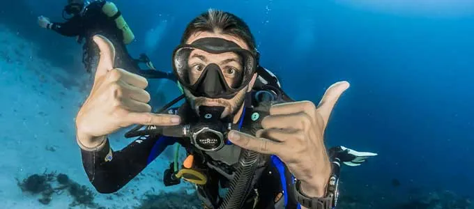
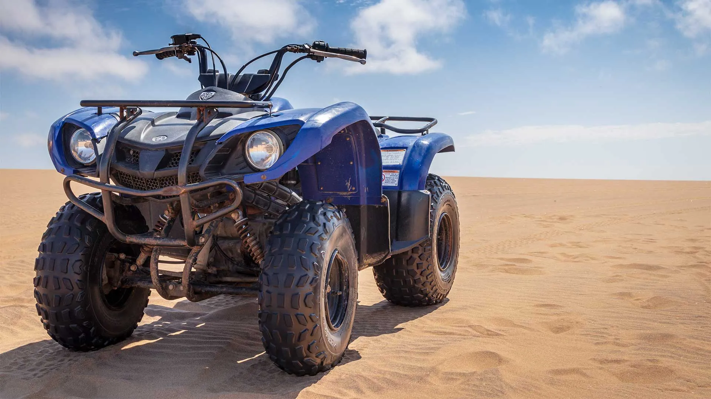
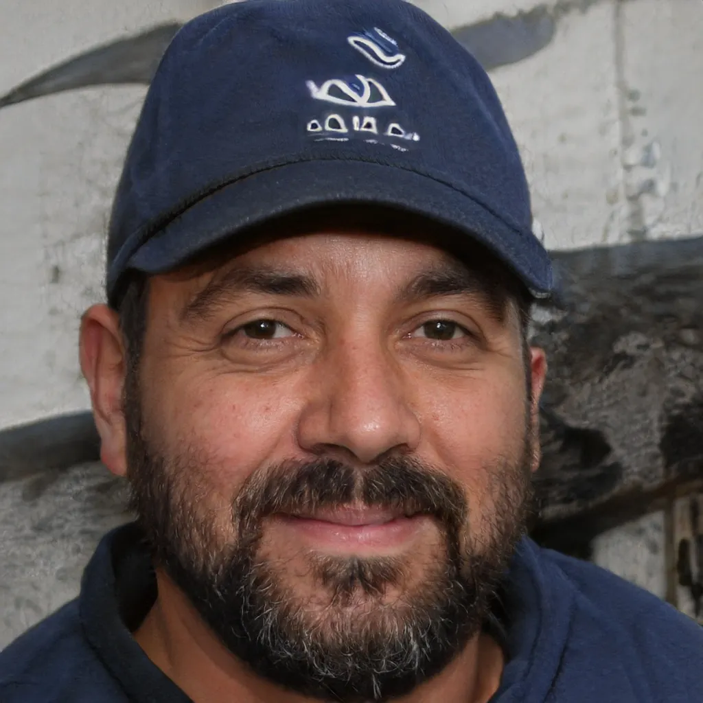

BIENVENIDO A SOLYMAR PARACAS
Tours en Paracas: Vive Experiencias Inolvidables
Descubre la majestuosidad de Paracas y Pisco con tours diseñados a tu medida. Conéctate con la naturaleza a través del Buceo, Snorkel, Parapente y actividades de aventura extrema en el desierto con la mejor seguridad.
Mejores Actividades de Aventura
en Paracas
Seleccionamos las mejores rutas y actividades para garantizarte una experiencia auténtica en el corazón de la Reserva Nacional de Paracas con guías certificados.

Snorkel de Superficie
Explora los jardines submarinos y la vibrante biodiversidad de la bahía al mejor precio.
VER TOUR DE SNORKEL trending_flat
Buceo
Sumérgete en las profundidades del Océano Pacífico con expertos y seguridad garantizada.
VER TOUR DE BUCEO trending_flat
Golden Shadows Trek
Camina entre acantilados milenarios y paisajes desérticos de ensueño en la Reserva Nacional.
VER TOUR DE TREKKING trending_flat
Vuelo en Parapente
Sobrevuela la costa y disfruta de la libertad absoluta con un guía certificado.
VER VUELO EN PARAPENTE trending_flat
Adrenarena Park
Libera tu adrenalina en el parque de aventura más emocionante de Paracas.
VER ADRENARENA PARK trending_flat
ATV & Go Karts
Conquista las dunas al mando de potentes vehículos todo terreno con total seguridad.
VER TOUR DE ATV trending_flat
Islas Ballestas
Descubre el hogar de lobos marinos y pingüinos en su estado natural al mejor precio.
VER ISLAS BALLESTAS trending_flat
Reserva Nacional
El majestuoso encuentro entre el desierto más árido y el océano azul en Paracas.
VER RESERVA NACIONAL trending_flatGuías y Consejos para tu Viaje
SolyMar Paracas: Tu Agencia de Turismo de Confianza
En SolyMar Paracas, no solo vendemos tours; creamos memorias. Somos especialistas en experiencias personalizadas que te permiten descubrir la magia de Paracas desde una perspectiva única. Desde la serenidad del buceo hasta la emoción del parapente, nuestro compromiso es brindarte seguridad, calidad y diversión en cada momento de tu viaje por la costa peruana, siempre acompañados por un guía certificado.
Seguridad Total
Equipos modernos y protocolos de seguridad internacional.
Atención Personal
Estamos contigo 24/7 para resolver cualquier duda o necesidad.
Expertos Locales
Guías certificados apasionados por la conservación y el turismo.
Preguntas Frecuentes sobre nuestros Tours en Paracas
1. ¿Cómo realizo mi reserva?
Puedes iniciar tu reserva vía WhatsApp. Al ser experiencias personalizadas, coordinamos primero los detalles contigo para asegurar una aventura a tu medida. Una vez definido el plan, el pago se realiza online de forma segura.
2. ¿Cuál es la política de cancelación?
Entendemos los imprevistos. Las reservas pueden cancelarse o reprogramarse bajo previa coordinación. Al confirmar tu pago online, garantizas tu cupo para la fecha pactada.
3. ¿Es seguro viajar con SolyMar?
Absolutamente. La seguridad es nuestra prioridad. Operamos con guías expertos y equipos certificados, manteniendo un historial de riesgo nulo en todas nuestras actividades.
4. ¿Qué debo llevar a los tours?
Recomendamos siempre protector solar, agua y ropa cómoda. Para actividades específicas como buceo o trekking, te proporcionaremos una lista detallada al momento de tu reserva.
Opiniones sobre nuestros Tours en Paracas

"¡Qué maravillosa Experiencia! volar parapente, las sombras y el buceo fueron increíblees, la atención de la Gerente fue más que excelente. Gracias..."
"Cuando los contacté sentí seguridad inmediatamente. Me trataron de lo mejor y las actividades ni que decir fuera de serie, ¡Me encantó!"
"Tengo una agencia en Lima y los contacté para una promoción y mis pasajeros me comentaron lo genial que los trataron en las actividades, por eso, SON MIS PREFERIDOS"
Reserva tu próxima aventura en Paracas hoy
Contáctanos ahora y reserva tu tour personalizado en Paracas al mejor precio con seguridad garantizada.
Reservar Ahora